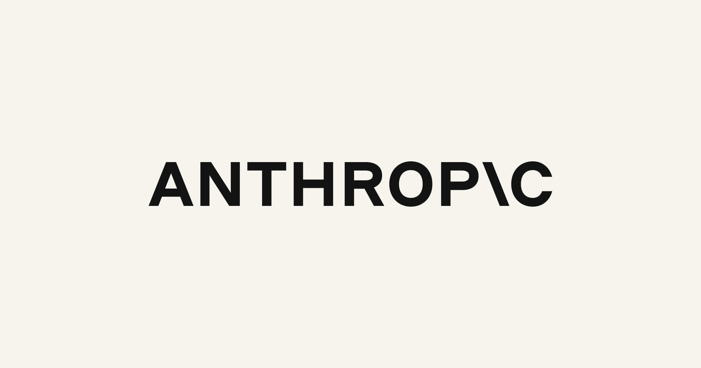
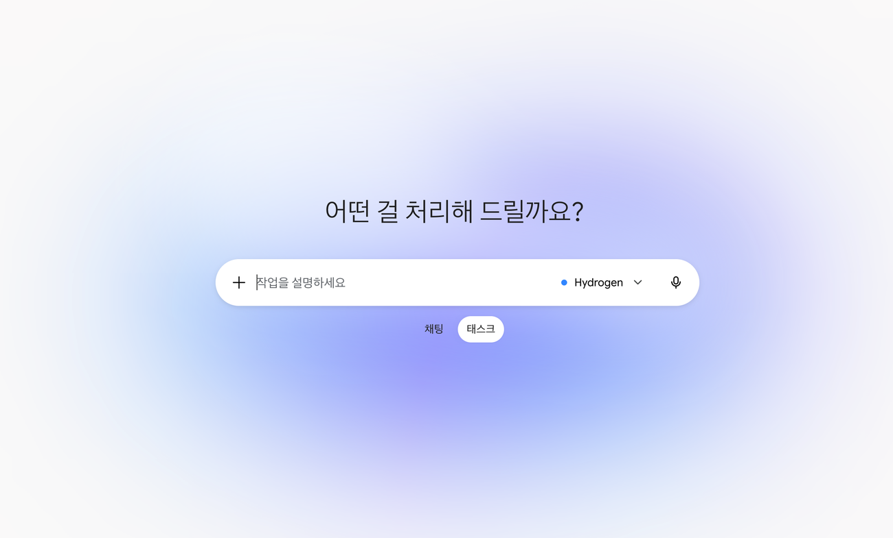

ADDIT DAILY MARKETING BRIEF
AI가 실행할수록,
검증·권한·성과를
먼저 설계하자
법률·예약·병원 업무까지 AI가 실행하는 시대, 모델 점수보다 운영 조건이 결과를 가릅니다.
GOOD MORNING, ADDIT오늘은 법률·예약·병원 업무까지 확장된 AI가 실제로 무엇을 실행할 때 필요한 검증선, 권한선, 성과선, 공정성선을 점검합니다.
TODAY’S 5 SIGNALS
11.19 · EXECUTION & GOVERNANCE04미국 AI 사용률 40%, 절감 시간은 2%
05AI 코딩 에이전트 공급망 보안과 국가자격시험 공정성
CASE STUDY
3 KR / 2 GLOBAL · 원문·이미지 대조 완료
01 · GLOBAL
법률용 GPT, 환각을 숫자로 검증하다
정확도 → 법률 워크플로
OpenAI는 24개 법률 영역 120개 과제로 평가한 LAB-AA 결과를 공개했다. GPT-6.2 Astra의 과제당 중대 환각은 0.03건으로 Claude Opus 5.5의 0.59건보다 약 20배 낮았다고 설명했다.
OpenAI 공식 발표 ↗ADDIT INSIGHT법률 AI의 경쟁력은 ‘똑똑해 보이는 답’이 아니라 인용·검증·책임소재가 남는 업무 흐름이다.

02 · GLOBAL
앤트로픽 상장, AI 경쟁의 계산서가 되다
모델 성장 → 자본·인프라
앤트로픽은 나스닥에 ANT로 상장했고, 로이터는 공모가를 주당 83달러로 보도했다. 청약 수요가 5000억달러에 육박했다는 보도는 비구속 주문 기준이므로 실제 투자금과 구분해 읽어야 한다.
Anthropic 공식 발표 ↗ADDIT INSIGHT모델 경쟁은 이제 성능만의 싸움이 아니다. 컴퓨트 조달, 현금 소진, 고객 매출을 함께 설명하는 운영 모델의 싸움이다.

03 · KR
제미나이 태스크 모드, 한국 무료 개방
대화 → 승인형 실행
구글은 Gemini 4 Hydrogen 기반 태스크 모드를 한국을 포함한 6개국에 무료로 확대했다. 사용자는 태스크 토글로 업무를 맡길 수 있으며, 미국에서 먼저 제공되는 이메일·문자 고급 기능과는 범위가 다르다.
Google 공식 블로그 ↗ADDIT INSIGHT에이전트의 신뢰는 자동화율보다 실행 범위·승인 시점·계정 주체를 사용자가 이해할 수 있게 보여주는 데서 시작한다.
04 · KR
인하대병원, 전사 AI를 업무 체계에 연결
도구 도입 → 업무 체계
인하대병원은 구글 Workspace와 Gemini Enterprise를 전사 도입한 국내 상급종합병원 사례로 소개됐다. Gemini Pro와 Notebook을 활용해 반복 행정과 지식 단절을 줄이고 업무 방식을 바꾸는 것이 목표다.
청년의사 원문 ↗ADDIT INSIGHT기업용 AI의 전환점은 모델 구매가 아니라 데이터 규칙·교육·업무 리디자인이 한 묶음으로 굴러갈 때다.
05 · KR
국가자격시험 AI 커닝, 검수 체계를 다시 묻다
부정 → 공정성 거버넌스
연합뉴스는 국가자격시험에서 2024년부터 지난달까지 스마트폰으로 문제를 촬영해 ChatGPT·Gemini에 묻는 사례가 9건 확인됐다고 보도했다. 적발 이후의 처벌뿐 아니라 기기·감독·수사 체계의 설계가 쟁점이다.
연합뉴스 원문 ↗ADDIT INSIGHTAI 시대의 공정성은 금지문 하나로 끝나지 않는다. 예방·탐지·조사·사후 감사의 다층 체계를 설계해야 한다.
PRACTICAL INSIGHT
오늘 바로 적용할 운영 원리SOURCE CHECK
11.19 제공 원문·공식 발표 검수ADDIT ACTION CHECK
- AI가 생성한 답변의 검증·인용·최종 승인 책임을 정했는가?
- 계정·데이터·결제·도구 실행 권한을 최소 권한으로 묶었는가?
- 절감 시간과 실제 산출량·품질을 함께 측정하는가?
- AI 사용의 예방·탐지·조사·사후 감사 절차가 있는가?
- 공식 원문과 대표 이미지가 연결된 상태로 검수됐는가?